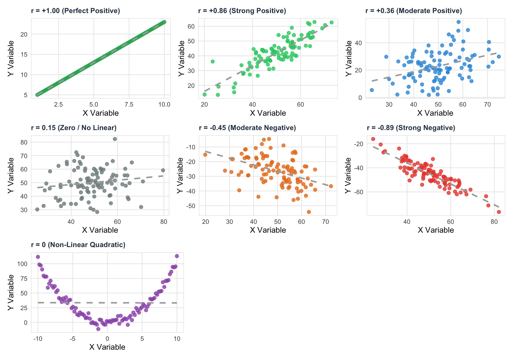
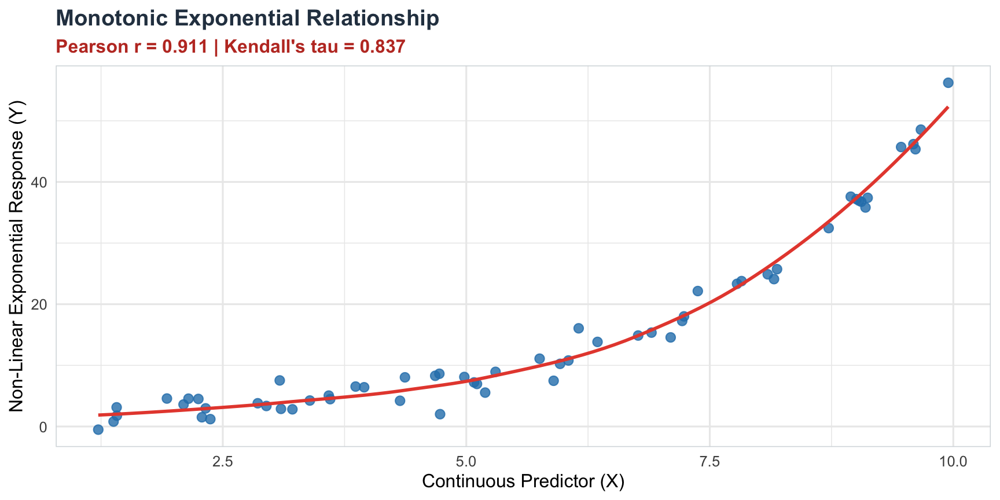
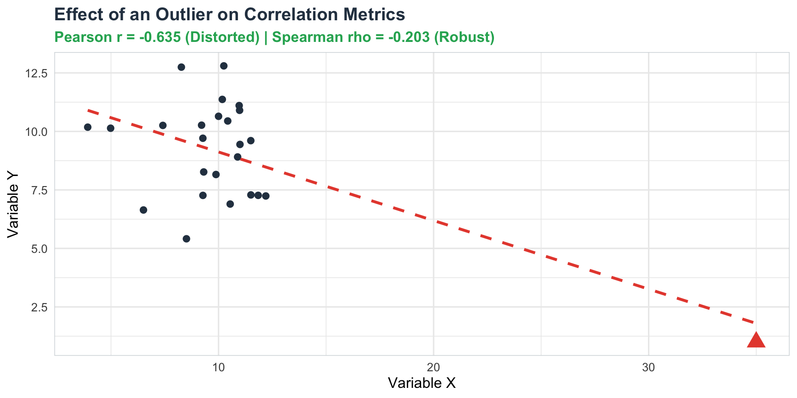
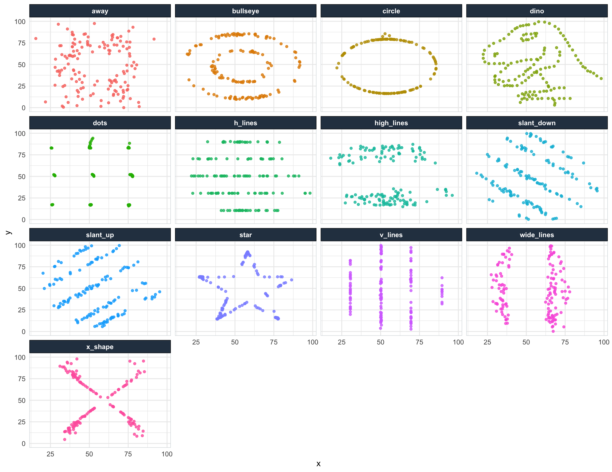

Understanding how two or more variables move together is a cornerstone of empirical research and statistical modeling. Whether analyzing the relationship between advertising spend and sales revenue, studying habits and exam performance, or height and weight, bivariate analysis allows us to quantify association, direction, and magnitude.
In this guide, we explore Covariance, Pearson’s Correlation, Kendall’s Tau, and Spearman’s Rho, complete with mathematical formulations, step-by-step calculations, hypothesis testing procedures, and data visualizations. We will also demonstrate how single summary statistics like correlation can be deceptively misleading using the famous datasauRus dataset, and conclude with why correlation does not imply causation.
1. Concept of Covariance
Before measuring correlation, we must examine its fundamental building block: Covariance.
Covariance measures the direction of a joint linear relationship between two quantitative variables. If higher values of variable \(X\) tend to correspond with higher values of variable \(Y\), their covariance is positive. Conversely, if higher values of \(X\) correspond with lower values of \(Y\), their covariance is negative.
Mathematical Formulation
For a population of pairs \((X, Y)\), the population covariance \(\sigma_{xy}\) is defined as the expected value of the product of their deviations from their respective means:
\[ \sigma_{xy} = \mathrm{Cov}(X,Y) = \mathbb{E}\left[(X - \mu_X)(Y - \mu_Y)\right] \]
Given a random sample of \(n\) paired observations \((x_1, y_1), (x_2, y_2), \dots, (x_n, y_n)\), the sample covariance \(s_{xy}\) is calculated as:
\[ s_{xy} = \frac{\sum_{i=1}^n (x_i - \bar{x})(y_i - \bar{y})}{n - 1} \]
where:
- \(\bar{x} = \frac{1}{n}\sum_{i=1}^n x_i\) is the sample mean of \(X\)
- \(\bar{y} = \frac{1}{n}\sum_{i=1}^n y_i\) is the sample mean of \(Y\)
- \(n - 1\) is the degrees of freedom adjustment for sample estimation.
Step-by-Step Calculation Example
Suppose we observe the weekly study hours (\(X\)) and midterm test scores (\(Y\)) for \(n = 5\) students:
| Student (\(i\)) | Study Hours (\(x_i\)) | Test Score (\(y_i\)) |
|---|---|---|
| 1 | 2 | 55 |
| 2 | 4 | 65 |
| 3 | 6 | 70 |
| 4 | 8 | 85 |
| 5 | 10 | 90 |
1. Compute Sample Means
\[ \bar{x} = \frac{2 + 4 + 6 + 8 + 10}{5} = 6 \]
\[ \bar{y} = \frac{55 + 65 + 70 + 85 + 90}{5} = 73 \]
2. Deviations and Products Table
| \(i\) | \(x_i\) | \(y_i\) | \((x_i - \bar{x})\) | \((y_i - \bar{y})\) | \((x_i - \bar{x})(y_i - \bar{y})\) |
|---|---|---|---|---|---|
| 1 | 2 | 55 | \(2 - 6 = -4\) | \(55 - 73 = -18\) | \((-4) \times (-18) = 72\) |
| 2 | 4 | 65 | \(4 - 6 = -2\) | \(65 - 73 = -8\) | \((-2) \times (-8) = 16\) |
| 3 | 6 | 70 | \(6 - 6 = 0\) | \(70 - 73 = -3\) | \(0 \times (-3) = 0\) |
| 4 | 8 | 85 | \(8 - 6 = 2\) | \(85 - 73 = 12\) | \(2 \times 12 = 24\) |
| 5 | 10 | 90 | \(10 - 6 = 4\) | \(90 - 73 = 17\) | \(4 \times 17 = 68\) |
| Sum | 180 |
3. Compute Sample Covariance
\[ s_{xy} = \frac{\sum_{i=1}^n (x_i - \bar{x})(y_i - \bar{y})}{n - 1} = \frac{180}{5 - 1} = \frac{180}{4} = 45 \]
Interpretation & Limitations
- Positive Covariance (\(s_{xy} > 0\)): Indicates that above-average values of \(X\) tend to associate with above-average values of \(Y\).
- Negative Covariance (\(s_{xy} < 0\)): Indicates an inverse relationship where above-average values of \(X\) associate with below-average values of \(Y\).
- Zero Covariance (\(s_{xy} \approx 0\)): Indicates no linear co-movement between \(X\) and \(Y\).
Major Limitation of Covariance
The numerical magnitude of covariance depends entirely on the measurement units of \(X\) and \(Y\).
For example, if study hours are converted to study minutes (\(X \times 60\)), the covariance increases by a factor of 60 (\(s_{xy} = 2700\)), even though the strength of the underlying relationship remains identical!
Because covariance is unbounded (\(-\infty < s_{xy} < \infty\)), it cannot tell us how strong the association is. To solve this limitation, we standardize covariance to obtain the Correlation Coefficient.
2. Concept of Correlation
Correlation is a standardized measure of bivariate association. By dividing the sample covariance by the product of the sample standard deviations of \(X\) and \(Y\), the metric is scaled into a universal range between \(-1.0\) and \(+1.0\).
\[ -1.0 \le r \le +1.0 \]
Depending on the scale of measurement, underlying distributional assumptions, and linearity of the data, statisticians use three primary correlation coefficients:
- Pearson’s Product-Moment Correlation (\(r\))
- Kendall’s Tau (\(\tau\))
- Spearman’s Rank Correlation (\(\rho\))
2.1 Pearson Correlation Coefficient (\(r\))
Concept
Pearson’s correlation coefficient evaluates the linear relationship between two continuous, normally distributed variables. It measures how closely sample points cluster around a straight trendline.
Formula
The sample Pearson correlation coefficient \(r\) is defined as:
\[ r = \frac{s_{xy}}{s_x s_y} = \frac{\sum_{i=1}^n (x_i - \bar{x})(y_i - \bar{y})}{\sqrt{\sum_{i=1}^n (x_i - \bar{x})^2 \sum_{i=1}^n (y_i - \bar{y})^2}} \]
where \(s_x\) and \(s_y\) are the sample standard deviations of \(X\) and \(Y\), respectively:
\[ s_x = \sqrt{\frac{\sum_{i=1}^n (x_i - \bar{x})^2}{n-1}}, \quad s_y = \sqrt{\frac{\sum_{i=1}^n (y_i - \bar{y})^2}{n-1}} \]
Interpretation
- \(r = +1.0\): Perfect positive linear relationship.
- \(r = +0.7 \text{ to } +0.9\): Strong positive linear relationship.
- \(r = +0.3 \text{ to } +0.6\): Moderate positive linear relationship.
- \(r = 0.0\): No linear association.
- \(r = -0.3 \text{ to } -0.6\): Moderate negative linear relationship.
- \(r = -0.7 \text{ to } -0.9\): Strong negative linear relationship.
- \(r = -1.0\): Perfect negative linear relationship.
Note: \(r = 0\) implies no linear relationship, but a strong non-linear (e.g., U-shaped or quadratic) relationship may still exist!
Hypothesis Testing for Pearson’s \(r\)
To test whether an observed sample correlation coefficient \(r\) reflects a true non-zero linear relationship in the population (\(\rho\)):
1. Hypotheses
- Null Hypothesis (\(H_0\)): \(\rho = 0\) (No linear relationship in the population)
- Alternative Hypothesis (\(H_1\)): \(\rho \neq 0\) (Two-tailed test for linear relationship)
2. Test Statistic
Under the assumption that \(X\) and \(Y\) follow a bivariate normal distribution, the test statistic follows a Student’s \(t\)-distribution with \(df = n - 2\) degrees of freedom:
\[ t = \frac{r \sqrt{n - 2}}{\sqrt{1 - r^2}} \sim t_{n-2} \]
3. Decision Rule
At significance level \(\alpha = 0.05\): * Reject \(H_0\) if \(|t| > t_{\alpha/2, n-2}\) or if the \(p\)-value \(< \alpha\). * Conclude that there is a statistically significant linear correlation between \(X\) and \(Y\).
Graphical Demonstration of Different Correlation Values
The plots below illustrate synthetic datasets with varying Pearson correlation values:
2.2 Kendall’s Tau (\(\tau\))
What is it?
Kendall’s rank correlation coefficient (\(\tau\)) is a non-parametric statistic that measures the strength of monotonic association between two ordinal or continuous variables.
Instead of measuring precise numerical distances like Pearson’s \(r\), Kendall’s tau evaluates whether pairs of data points move in the same relative rank direction (concordance) or opposite rank directions (discordance).
Concordant vs. Discordant Pairs
Consider two paired observations \((x_i, y_i)\) and \((x_j, y_j)\): * Concordant Pair: If \(x_i > x_j\) and \(y_i > y_j\), or \(x_i < x_j\) and \(y_i < y_j\). (The rank order of \(X\) matches the rank order of \(Y\)). * Discordant Pair: If \(x_i > x_j\) and \(y_i < y_j\), or \(x_i < x_j\) and \(y_i > y_j\). (The rank order of \(X\) is opposite to \(Y\)). * Tied Pair: If \(x_i = x_j\) or \(y_i = y_j\).
When to Use Kendall’s Tau?
- Ordinal Data: When variables are measured on an ordinal scale (e.g., Likert scales, rankings).
- Small Sample Sizes: Kendall’s tau has superior statistical properties and lower error rates in small samples compared to Spearman’s rho.
- Presence of Tied Ranks: Variant \(\tau_b\) explicitly handles ties in data rankings.
- Violations of Normality: Non-parametric approach that requires no normality assumption.
Formula
For \(n\) observations, the total number of unique pairs is \(\binom{n}{2} = \frac{n(n-1)}{2}\).
When there are no tied ranks, Kendall’s Tau-a is:
\[ \tau = \frac{C - D}{\frac{1}{2} n (n - 1)} = \frac{C - D}{C + D} \]
where: * \(C\) = Number of concordant pairs * \(D\) = Number of discordant pairs
When ties exist, Kendall’s Tau-b is adjusted:
\[ \tau_b = \frac{C - D}{\sqrt{\left(C + D + T_x\right) \left(C + D + T_y\right)}} \]
where \(T_x\) and \(T_y\) represent ties in \(X\) and \(Y\), respectively.
Hypothesis Testing for Kendall’s \(\tau\)
1. Hypotheses
- Null Hypothesis (\(H_0\)): \(\tau = 0\) (No monotonic association between \(X\) and \(Y\))
- Alternative Hypothesis (\(H_1\)): \(\tau \neq 0\) (Monotonic association exists)
2. Test Statistic (Large Sample Approximation)
For sample sizes \(n > 10\), the test statistic \(Z\) follows an approximate standard normal distribution under \(H_0\):
\[ Z = \frac{3 \tau \sqrt{n(n - 1)}}{\sqrt{2(2n + 5)}} \sim N(0, 1) \]
Graphical Demonstration of Monotonic vs. Linear Relationships

2.3 Spearman’s Rho (\(\rho\))
What is it?
Spearman’s rank correlation coefficient (\(r_s\) or \(\rho\)) is a non-parametric statistic that measures the strength and direction of a monotonic relationship between two ranked variables.
Technically, Spearman’s \(\rho\) is equivalent to calculating Pearson’s correlation coefficient \(r\) directly on the ranked values of \(X\) and \(Y\) rather than raw scores.
When to Use Spearman’s Rho?
- Non-linear Monotonic Data: When variables increase or decrease together, but not necessarily at a constant linear rate.
- Ordinal Scale Data: Ranking variables (e.g., student class rank vs test performance).
- Outliers Present: Because Spearman operates on ranks, extreme outliers have a constrained effect on ranks compared to raw values.
- Non-normal Continuous Variables: Avoids linear and normality assumptions required by Pearson.
Formula
Let \(R(x_i)\) and \(R(y_i)\) be the ranks of \(x_i\) and \(y_i\). Define \(d_i = R(x_i) - R(y_i)\) as the difference between the ranks for observation \(i\).
If there are no tied ranks, Spearman’s coefficient is given by the exact formula:
\[ r_s = 1 - \frac{6 \sum_{i=1}^n d_i^2}{n(n^2 - 1)} \]
If tied ranks are present, ranks are averaged, and Pearson’s formula is computed on the ranks \(R(x)\) and \(R(y)\):
\[ r_s = \frac{\sum_{i=1}^n (R(x_i) - \bar{R}_x)(R(y_i) - \bar{R}_y)}{\sqrt{\sum_{i=1}^n (R(x_i) - \bar{R}_x)^2 \sum_{i=1}^n (R(y_i) - \bar{R}_y)^2}} \]
Hypothesis Testing for Spearman’s \(\rho\)
1. Hypotheses
- Null Hypothesis (\(H_0\)): \(\rho_s = 0\) (No monotonic correlation in the population)
- Alternative Hypothesis (\(H_1\)): \(\rho_s \neq 0\) (Monotonic correlation exists)
2. Test Statistic
For sample sizes \(n \ge 10\), the test statistic uses Student’s \(t\)-distribution with \(df = n - 2\):
\[ t = \frac{r_s \sqrt{n - 2}}{\sqrt{1 - r_s^2}} \sim t_{n-2} \]
For small sample sizes (\(n < 10\)), exact critical values tables for Spearman’s \(r_s\) are used.
Graphical Demonstration: Outlier Robustness of Spearman vs. Pearson

3. How Correlation Can Be Misleading: The Datasaurus Dozen
A common pitfall in empirical data analysis is relying solely on summary statistics—such as means, standard deviations, and correlation coefficients—without plotting the underlying distribution.
To illustrate this danger, Alberto Cairo created the famous Datasaurus Dozen dataset (available in R via the datasauRus package).
Summary Statistics Comparison
Let us compute summary statistics across 12 distinct datasets in datasauRus:
| Dataset Name | Mean (X) | SD (X) | Mean (Y) | SD (Y) | Pearson Correlation (r) |
|---|---|---|---|---|---|
| away | 54.27 | 16.77 | 47.83 | 26.94 | -0.06 |
| bullseye | 54.27 | 16.77 | 47.83 | 26.94 | -0.07 |
| circle | 54.27 | 16.76 | 47.84 | 26.93 | -0.07 |
| dino | 54.26 | 16.77 | 47.83 | 26.94 | -0.06 |
| dots | 54.26 | 16.77 | 47.84 | 26.93 | -0.06 |
| h_lines | 54.26 | 16.77 | 47.83 | 26.94 | -0.06 |
| high_lines | 54.27 | 16.77 | 47.84 | 26.94 | -0.07 |
| slant_down | 54.27 | 16.77 | 47.84 | 26.94 | -0.07 |
| slant_up | 54.27 | 16.77 | 47.83 | 26.94 | -0.07 |
| star | 54.27 | 16.77 | 47.84 | 26.93 | -0.06 |
| v_lines | 54.27 | 16.77 | 47.84 | 26.94 | -0.07 |
| wide_lines | 54.27 | 16.77 | 47.83 | 26.94 | -0.07 |
| x_shape | 54.26 | 16.77 | 47.84 | 26.93 | -0.07 |
Key Observation: Across all 12 datasets, the summary statistics are virtually identical: * \(\text{Mean}(X) \approx 54.26\) * \(\text{Mean}(Y) \approx 47.83\) * \(\text{SD}(X) \approx 16.76\) * \(\text{SD}(Y) \approx 26.93\) * \(\text{Pearson Correlation } r \approx -0.06\)
If we only reported these statistical metrics, we would conclude that all 12 datasets represent the exact same weak, slightly negative relationship.
Graphical Revelation
However, when we visualize the data with scatterplots, the stark reality is revealed:

Lesson for Data Analysts
- Never judge a dataset by summary statistics alone.
- Always plot your raw data before calculating summary metrics or running regression models.
- Anscombe’s Quartet and the Datasaurus Dozen demonstrate that identical correlation values (\(r = -0.06\)) can arise from a Dinosaur shape, concentric circles, star shapes, or grid structures!
4. Conclusion: Correlation Is NOT Causation
The golden rule of statistics and scientific reasoning is:
“Correlation implies association, but correlation does NOT imply causation.”
Finding a strong, statistically significant correlation between variable \(X\) and variable \(Y\) (\(r \approx \pm 1, p < 0.001\)) simply means that \(X\) and \(Y\) co-vary together. It provides zero proof that \(X\) causes \(Y\).
Why Correlation \(\neq\) Causation
There are four primary reasons why two variables may be strongly correlated without a direct causal mechanism:
1. Spurious Correlation & Coincidence
With thousands of global variables tracked over time, many variables move together purely by chance.
- Classic Example: The total annual revenue generated by arcade games correlates almost perfectly (\(r = 0.98\)) with computer science doctorates awarded in the US. However, playing arcade games does not grant a PhD!
2. Confounding / Third-Variable Problem (\(Z \to X\) and \(Z \to Y\))
An unobserved third variable \(Z\) (a confounder) causes changes in both \(X\) and \(Y\) simultaneously, creating an artificial correlation between \(X\) and \(Y\).
[ Confounder Z ] (e.g., Summer Temperature)
/ \
v v
[ Ice Cream Sales X ] [ Drowning Incidents Y ]- Example: Ice cream consumption (\(X\)) is strongly positively correlated with drowning incidents (\(Y\)).
- The Reality: Eating ice cream does not cause drowning. The underlying confounder is outdoor temperature (\(Z\)). On warm summer days, more people buy ice cream and more people go swimming, leading to higher drowning risks.
3. Reverse Causality (\(Y \to X\))
We may hypothesize that \(X \to Y\), when in fact \(Y\) is causing \(X\).
- Example: A strong positive correlation exists between taking anxiety medication (\(X\)) and reported anxiety levels (\(Y\)).
- The Reality: The medication does not cause anxiety; rather, experiencing high anxiety causes individuals to seek medication.
4. Bidirectional / Feedback Loops
\(X\) causes \(Y\), but \(Y\) also simultaneously causes \(X\) in a dynamic feedback loop.
- Example: Academic confidence (\(X\)) and academic performance (\(Y\)) reinforce one another over time.
How to Establish Causation in Scientific Research
If correlation is insufficient, how do scientists establish true causal links?
| Method | Mechanism for Establishing Causality |
|---|---|
| Randomized Controlled Trials (RCTs) | Randomly assigning participants to treatment vs. control groups eliminates confounding variables (\(Z\)). |
| Natural Experiments | Utilizing exogenous shocks or policy changes that isolate variation in \(X\). |
| Instrumental Variables (IV) | Using an instrument \(Z\) that influences \(X\) but affects \(Y\) only through \(X\). |
| Causal Graphs (DAGs) | Mapping causal structures using Directed Acyclic Graphs and Structural Equation Models. |
| Granger Causality & Time Lagging | Testing whether past values of \(X\) contain unique predictive information about future values of \(Y\). |
Summary Matrix
| Metric | Type | Scale Requirement | Measures | Robust to Outliers? | Formula / Basis |
|---|---|---|---|---|---|
| Covariance (\(s_{xy}\)) | Unstandardized | Continuous | Unbounded linear co-movement | No | \(\frac{\sum (x - \bar{x})(y - \bar{y})}{n - 1}\) |
| Pearson’s \(r\) | Parametric | Continuous | Linear relationship \([-1, +1]\) | No | \(\frac{s_{xy}}{s_x s_y}\) |
| Kendall’s \(\tau\) | Non-parametric | Ordinal / Continuous | Concordant vs discordant pairs | Yes | \(\frac{C - D}{\frac{1}{2}n(n-1)}\) |
| Spearman’s \(\rho\) | Non-parametric | Ordinal / Continuous | Monotonic rank relationship | Yes | \(1 - \frac{6\sum d_i^2}{n(n^2-1)}\) |
By combining rigorous statistical metrics with visual exploration and sound experimental design, researchers can accurately understand data relationships without falling victim to spurious conclusions.